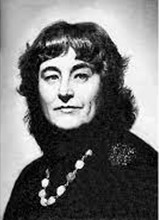

Judita Vaičiūnaitė
 Judita Vaičiūnaitė (1937–2001) – poetė, „Poezijos pavasario“ laureatė, DLK Gedimino ordininkė. Iki septyniolikos metų gyveno Kaune, mirus tėvui išsikraustė į Vilnių, 1959 m. Vilniaus universitete baigė lituanistiką. Studijų metai Vaičiūnaitę suvedė su dviem geriausiais literatūriniais bičiuliais Aušra Sluckaite ir Tomu Venclova. Ji dirbo „Literatūros ir meno“, „Kalba Vilnius”, „Naujojo dienovidžio” redakcijose. Pirmasis poezijos rinkinys „Pavasario akvarelės“ pasirodė 1960 m. Vėliau išleido beveik 20 eilėraščių rinkinių, parašė poezijos, pasakų vaikams. 1986 m. apdovanota valstybine premija už rinkinį „Nemigos aitvaras“. 1996 m. apdovanota Baltijos Asamblėjos premija už poezijos rinkinį „Žemynos vainikai“. 2005 m. išleista pomirtinė poetės rinktinė „Aitvaras“. Juditos Vaičiūnaitės kūryba išsiskiria tuo, kad ji viena iš pirmųjų lietuvių poezijoje natūraliai priėmė miesto kultūros pasaulį. Miesto pasaulis J. Vaičiūnaitei toks pat apgyventas, jaukus ir poetiškas, kaip kitiems poetams kaimas.
Kūryba
J. Vaičiūnaitė eksperimentavo ir su eilėraščio formomis: vidiniai ritmai, ištobulinta sinkopinė ritmika perteikia jausmo pulsavimą; eilučių laužymas, konkrečiosios poezijos bandymai išplėtė meninės raiškos galimybes. Poetė kūrė akimirksnio piešinį. Poezijoje pastebimas impresionistiškumas ir romantiškumas, įprastinę perspektyvą paneigiantis kubistinis žvilgsnis, siurrealizmas. Vyraujantis kultūros pasaulis egzistuoja supamas gamtos, kuriai daugiau dėmesio skyrė vėlesnėje kūryboje. Jos parašyti kūriniai: debiutinis kūrinys „Pavasario akvarelės“ (1960), eilėraščių rinkiniai: „Kaip žalias vynas“ (1962), „Per saulėtą gaublį“ (1964), „Vėtrungės“ (1966), „Po šiaurės herbais“ (1968), „Pakartojimai“ (1971), „Klajoklė saulė“ (1974), „Neužmirštuolių mėnesį“ (1977), „Šaligatvio pienės“ (1980), „Smuikas“ (1984), „Žiemos lietus“ (1987), „Gatvės laivas“ (1991), „Nemigos aitvaras“ (1985). „Pavasario fleita“ (1980)- lyrinių dramų rinkinys, kuriame vyrauja poetizuotas miestas. Dailės ir architektūros kūriniai, aktyvinę poetės vaizduotę, praplėtė lietuvių eilėraščio intelektualią tematiką. Miesto kultūriniai, istoriniai klodai, miesto vaizdas regimi kaip dailės kūrinys. Sukūrė poezijos vaikams: „Spalvoti piešiniai (1971), „Balkonas penktame aukšte“ (1976), „Karuselės elnias“ (1981), pjesių, pasakų: „Skersgatvio pasaka“ (1972), „Mėnulio gėlė“ (1975), „Klouno koncertas“ (1974).
Atminimo įamžinimas
Juditos Vaičiūnaitės įamžinimui yra sukurtas skulptoriaus Henriko Orakausko paminklas Vilniuje. Taip pat galima pasiklausyto ne vieno Vaičiūnaitės kūrybos įrašo LRT mediatekoje.
Galerija